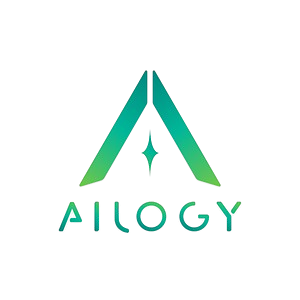

Quốc hội Việt Nam đang vận hành với hàng chục hệ thống rời rạc, dữ liệu pháp lý phân tán, quy trình nghiệp vụ chưa được số hóa đồng bộ.và chưa hệ thống nào tích hợp, thông minh hóa và bảo mật toàn bộ vận hành nghị trường để giải quyết bài toán này.
Tra cứu văn bản pháp luật, tiền lệ và hồ sơ lập pháp mất nhiều thời gian do dữ liệu phân tán trên nhiều kho lưu trữ không kết nối.
Việc tổng hợp ý kiến, chuẩn bị báo cáo thẩm tra và tài liệu kỳ họp đòi hỏi nguồn nhân lực lớn với quy trình thủ công chưa được tự động hóa.
Phụ thuộc vào nền tảng họp trực tuyến thương mại nước ngoài tiềm ẩn rủi ro bảo mật thông tin quốc gia và thiếu kiểm soát dữ liệu.
Với tầm nhìn hiện đại hóa toàn diện hoạt động của Quốc hội, chuyển đổi phương thức làm việc truyền thống sang môi trường số thông minh, an toàn và tương tác cao. Nền tảng Quốc hội số thông minh, tích hợp AI Copilot, phục vụ hiện đại hóa hoạt động lập pháp, giám sát, tổ chức kỳ họp, biểu quyết, truyền hình Quốc hội, họp trực tuyến bảo mật và tương tác với cử tri.
Số hóa quy trình từ hồ sơ lập pháp, thẩm tra, kỳ họp, biểu quyết đến giám sát và công bố.
Liên kết văn bản, hồ sơ, phát biểu, báo cáo và video thành kho tri thức có thể truy xuất thông minh.
AI Copilot hỗ trợ phân tích, tóm tắt, lập biên bản, tra cứu và gợi ý theo từng vai trò nghiệp vụ.
Triển khai trên hạ tầng kiểm soát, có định danh, phân quyền, mã hóa và audit log cho dữ liệu nhạy cảm.
AI Parliament OS không tách rời vận hành và dữ liệu. Mỗi hồ sơ, phiên họp, phát biểu, biểu quyết và phản hồi cử tri đều đi qua cùng một kiến trúc lõi: lớp nghiệp vụ tạo dữ liệu, dữ liệu được chuẩn hóa thành tri thức, AI Copilot truy xuất tri thức đó để hỗ trợ lại đúng bước công việc.
Cổng cử tri, Ứng dụng đại biểu, Hệ thống nội bộ và Điểm truy cập họp trực tuyến.
Lập pháp, thẩm tra, Kỳ họp, Biểu quyết, Giám sát, Truyền hình và Họp bảo mật.
Copilot theo vai trò, Truy xuất tri thức pháp lý và Trả gợi ý ngay trong luồng xử lý.
Workflow, Session, Voting, Identity, Rules, Nhiệm vụ và Audit log bất biến.
Data Lake, Legal Corpus, Vector DB, Legal Knowledge Graph, Data Warehouse, Video Archive và Meeting Archive.
IAM, API Gateway, Mã hóa, Watermark, Phân quyền, Giám sát và Nhật ký bảo mật.
Cử tri, đại biểu hoặc chuyên viên gửi yêu cầu, hồ sơ, phát biểu hoặc nội dung họp qua kênh đã xác thực.
Workflow chuyển hồ sơ vào đúng phân hệ: lập pháp, ủy ban, kỳ họp, biểu quyết, giám sát hoặc truyền hình.
Văn bản, biên bản, video, ý kiến và kết quả xử lý được gắn metadata, liên kết điều khoản và lưu vết.
Copilot dùng Legal Corpus, Vector DB và Legal Knowledge Graph để tóm tắt, so sánh luật, cảnh báo rủi ro và gợi ý xử lý.
Kết quả AI, báo cáo, nhiệm vụ, biểu quyết và dashboard được đưa ngược về workflow để tiếp tục xử lý hoặc công bố.
Mỗi thao tác trong lập pháp, thẩm tra, kỳ họp, biểu quyết, giám sát và cổng cử tri đều sinh ra dữ liệu có ngữ cảnh, chủ thể và trạng thái xử lý.
Dữ liệu được chuẩn hóa vào corpus, vector hóa và liên kết bằng Legal Knowledge Graph để kết nối quan hệ giữa văn bản, điều khoản, phát biểu và hồ sơ.
Copilot không đứng riêng như chatbot, mà trả kết quả về đúng màn hình nghiệp vụ: tóm tắt hồ sơ, gợi ý câu hỏi, cảnh báo xung đột và tạo báo cáo.
Dữ liệu không chỉ được lưu trữ, mà đi qua các tầng xử lý liên tục. Từ dữ liệu thô ban đầu, hệ thống tạo corpus pháp lý, khả năng tìm kiếm ngữ nghĩa, đồ thị tri thức, kho lưu trữ video/cuộc họp và dashboard vận hành.
Tiếp nhận văn bản, hồ sơ, biên bản, dữ liệu biểu quyết, video và phản hồi cử tri.
ưu trữ Hiến pháp, luật, nghị quyết, pháp lệnh, nghị định liên quan, thông tư liên quan, dự thảo luật, báo cáo giải trình, báo cáo thẩm tra và biên bản phiên họp.
Cho phép AI truy xuất ngữ cảnh, tìm kiếm ngữ nghĩa và đối chiếu nội dung tương đồng. Phục vụ tìm kiếm ngữ nghĩa, hỏi đáp AI, tra cứu nội dung tương tự, hỗ trợ soạn thảo, tóm tắt và phân tích tài liệu.
Kết nối các thực thể pháp lý và nghị trường như văn bản pháp luật, dự luật, điều khoản, sửa đổi, ủy ban, đại biểu, phiên họp, biểu quyết, ý kiến cử tri, video phiên họp và báo cáo thẩm tra.
Phục vụ báo cáo quản trị, thống kê hoạt động, đánh giá hiệu quả vận hành và theo dõi chỉ số sử dụng hệ thống.
Triết lý thiết kế AI Parliament OS từ chối tiếp cận theo hướng một Chatbot đa năng chung chung từ đó hệ thống được cấu trúc thành một mạng lưới các AI Copilot chuyên biệt, nơi mỗi trợ lý ảo là một "chuyên gia" được tối ưu hóa sâu cho từng phòng ban và nghiệp vụ cụ thể của Quốc hội.
Soạn thảo, chuẩn hóa ngôn ngữ, so sánh phiên bản, phát hiện lỗi tham chiếu và tạo bản tóm tắt dự luật.
Tóm tắt hồ sơ thẩm tra, trích xuất vấn đề trọng tâm, gợi ý câu hỏi và tạo bản nháp báo cáo thẩm tra.
Chuyển giọng nói thành văn bản, tóm tắt phiên họp, trích xuất ý kiến đại biểu, phân nhóm chủ đề và lập biên bản.
Nhắc quy trình biểu quyết, tóm tắt nội dung được biểu quyết, tra cứu lịch sử biểu quyết và tạo báo cáo sau biểu quyết.
Tóm tắt báo cáo giám sát, trích xuất cam kết, theo dõi hạn xử lý và tạo báo cáo tổng hợp.
Tạo phụ đề tự động, highlight video, gắn metadata, tìm kiếm video và liên kết phát biểu với dự luật.
Viết biên bản họp, trích xuất kết luận, trích xuất nhiệm vụ và tổng hợp ý kiến trong cuộc họp bảo mật.
Hỗ trợ người dân hiểu luật, tóm tắt dự luật, hỏi đáp phổ biến và hướng dẫn góp ý.
Các phân hệ lõi tạo nên Quốc hội số: từ Lập pháp, Thẩm tra, Kỳ họp, Biểu quyết, Giám sát, Truyền hình, Họp trực tuyến đến Cổng cử tri. Mỗi hệ thống được thiết kế riêng biệt nhưng tích hợp chặt chẽ qua dữ liệu pháp lý chung.
Từ khởi tạo, soạn thảo, lấy ý kiến, chỉnh lý, thẩm tra, trình kỳ họp, biểu quyết đến công bố.
Phục vụ các ủy ban xem xét dự án luật, nghị quyết, báo cáo và chuyên đề với tổng hợp ý kiến toàn diện.
Lập chương trình, điều phối nội dung, quản lý phát biểu, ghi âm, chuyển giọng nói thành văn bản và lập hồ sơ phiên họp.
Tổ chức biểu quyết tại phiên họp, bảo đảm chính xác, bảo mật, có lưu vết và khả năng kiểm tra sau biểu quyết.
Quản lý chuyên đề giám sát, phiên chất vấn, kiến nghị và theo dõi cam kết của các cơ quan qua nhiều kỳ.
Ghi hình, phát sóng, lưu trữ, biên tập, tạo phụ đề và tra cứu thông minh với thư viện video phiên họp.
Triển khai trên hạ tầng do Quốc hội tự quản lý hoặc do Nhà nước kiểm soát, không sử dụng nền tảng thương mại bên thứ ba.
Giúp người dân tra cứu pháp luật, theo dõi hoạt động Quốc hội và gửi góp ý đến cơ quan chủ trì một cách dễ dàng.
Bảo mật được đặt là nguyên tắc thiết kế bắt buộc, bao gồm Định danh, Phân quyền, Bảo vệ tài liệu, Bảo mật biểu quyết, Kiểm soát họp trực tuyến và Nhật ký hệ thống.
Quản lý tài khoản đại biểu, cán bộ, chuyên viên, thư ký, quản trị viên, người dân và khách mời có kiểm soát.
Người dùng chỉ truy cập nội dung phù hợp với vai trò, đơn vị, cấp độ tài liệu và trạng thái hồ sơ.
Tài liệu được kiểm soát quyền xem, tải, in, chia sẻ, thu hồi quyền truy cập; hỗ trợ mã hóa và watermark theo yêu cầu bảo mật.
Quy trình biểu quyết có xác thực nhiều lớp, mã hóa dữ liệu, lưu vết, kiểm tra tính toàn vẹn và phương án dự phòng.
Nền tảng họp nội bộ không dùng bên thứ ba, kiểm soát người tham dự, tài liệu chia sẻ, quyền ghi âm, ghi hình và watermark.
Ghi nhận truy cập, chỉnh sửa, phê duyệt, hỗ trợ của AI, người tham gia họp và hoạt động với tài liệu họp.
Lộ trình triển khai thực tế, ưu tiên giá trị sớm và giảm thiểu rủi ro qua từng giai đoạn.
Khảo sát nghiệp vụ, thiết kế kiến trúc, quản lý tài liệu, kỳ họp, biểu quyết MVP, speech-to-text, tóm tắt phiên họp, nhật ký và lưu trữ video cơ bản.
Triển khai Legislative, Committee, Session Copilot; AI tra cứu văn bản, hỗ trợ thẩm tra, lập biên bản, Legal Knowledge Graph v1, cổng tra cứu và Parliament TV Search v1.
Triển khai họp trực tuyến nội bộ, phòng họp bảo mật, AI biên bản họp, watermark, tìm kiếm video, timeline, phụ đề và highlight tự động.
Hoàn thiện AI soạn thảo nâng cao, phát hiện mâu thuẫn pháp lý, theo dõi sửa đổi dự luật, giám sát cam kết, Citizen Copilot, tích hợp dữ liệu bộ ngành và kho video thông minh.
AI Parliament OS tạo giá trị đồng thời cho cơ quan vận hành, đại biểu, ủy ban chuyên môn, truyền thông nghị trường và người dân, với trọng tâm là hiệu quả xử lý, minh bạch dữ liệu và khả năng phục vụ liên tục.
Nâng cao hiệu quả lập pháp, tăng tính minh bạch và trách nhiệm giải trình trên một hạ tầng số tự chủ, bảo mật.
AI Copilot cá nhân hóa giúp tiết kiệm thời gian nghiên cứu, chuẩn bị lập luận tốt hơn và nâng cao chất lượng phát biểu.
Tự động hóa tổng hợp ý kiến và báo cáo thẩm tra, giảm thời gian chuẩn bị nhưng vẫn tăng chiều sâu phân tích chuyên môn.
Nền tảng phát sóng hiện đại với phụ đề tự động, lưu trữ số, metadata và tìm kiếm nội dung nghị trường thông minh.
Tiếp cận thông tin pháp luật dễ hơn, gửi kiến nghị và theo dõi phản hồi rõ ràng hơn, tăng cường tương tác dân chủ số.
Các chỉ số được theo dõi liên tục qua dashboard vận hành, phản ánh toàn diện hiệu quả số hóa, ứng dụng AI và chất lượng phục vụ của nền tảng.
Theo dõi tỷ lệ hồ sơ được quản lý trên nền tảng số và mức độ hài lòng của người dùng nội bộ.
Đo thời gian trung bình để chuẩn bị tài liệu kỳ họp và lập biên bản phiên họp.
Theo dõi số lượt tra cứu video phiên họp trên hệ thống lưu trữ và tìm kiếm nội dung.
Đếm số phiên họp được ghi hình, tạo phụ đề, tạo timeline và bản tóm tắt bằng AI.
Theo dõi số cuộc họp trực tuyến bảo mật được tổ chức và số lỗi tham chiếu được hệ thống cảnh báo.
Theo dõi số lượt người dân tra cứu dự luật và sử dụng AI Copilot, đặc biệt là Citizen Copilot.
Các bước tiếp theo được sắp xếp theo đúng trình tự làm việc: làm rõ nhu cầu, khảo sát, thiết kế tổng thể, thí điểm MVP và đánh giá mở rộng.
Làm việc với Văn phòng Quốc hội và các đơn vị liên quan để làm rõ nhu cầu, hiện trạng hệ thống, quy trình, dữ liệu và yêu cầu bảo mật.
Khảo sát các nhóm nghiệp vụ trọng yếu như lập pháp, thẩm tra, kỳ họp, biểu quyết, truyền hình, họp trực tuyến, giám sát và cổng người dân.
Hoàn thiện kiến trúc tổng thể, danh mục phân hệ, mô hình dữ liệu, mô hình AI Copilot, yêu cầu bảo mật, kế hoạch triển khai, dự toán nguồn lực và phương án thí điểm.
Lựa chọn phạm vi thí điểm có tác động rõ ràng như AI tóm tắt phiên họp, AI thẩm tra, tìm kiếm video, họp trực tuyến bảo mật hoặc cổng tra cứu dự luật.
Đánh giá hiệu quả sau thí điểm, hoàn thiện yêu cầu và mở rộng triển khai theo lộ trình.